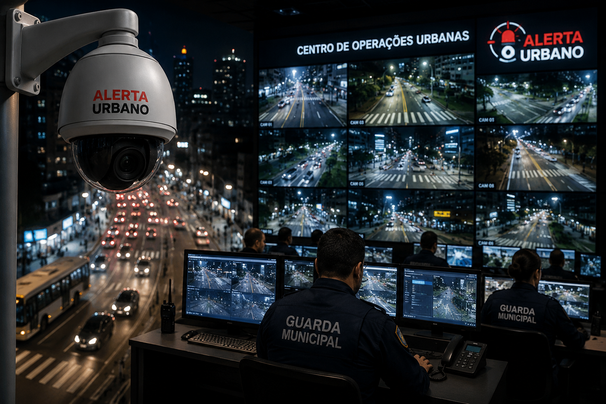

Prefeitura anuncia programa de monitoramento inteligente para aumentar a segurança urbana
Guarulhos, 11 de junho de 2026 A Prefeitura anunciou nesta semana a implantação de um novo sistema de monitoramento inteligente em diversos pontos estratégicos da cidade. O projeto prevê a instalação de câmeras de alta resolução equipadas com tecnologia de análise em tempo real para auxiliar as forças de segurança. Segundo a administração municipal, o objetivo é ampliar a capacidade de resposta a ocorrências, identificar situações suspeitas e contribuir para a redução dos índices de criminalidade em áreas com grande circulação de pessoas. O sistema será integrado ao Centro de Operações Urbanas, permitindo o acompanhamento das imagens 24 horas por dia. Além disso, equipes da Guarda Civil Municipal receberão treinamento específico para operar a nova plataforma. Moradores da região central receberam a notícia com expectativa positiva. Para muitos, a iniciativa representa um avanço importante na busca por uma cidade mais segura e organizada. A primeira fase do projeto deve ser concluída nos próximos três meses, abrangendo avenidas principais, praças e terminais de transporte público. A prefeitura informou ainda que novas etapas poderão ser implementadas conforme os resultados obtidos. Especialistas destacam que o uso de tecnologia na gestão urbana tem se tornado uma tendência em grandes cidades brasileiras, contribuindo para a modernização dos serviços públicos e para a melhoria da qualidade de vida da população.
